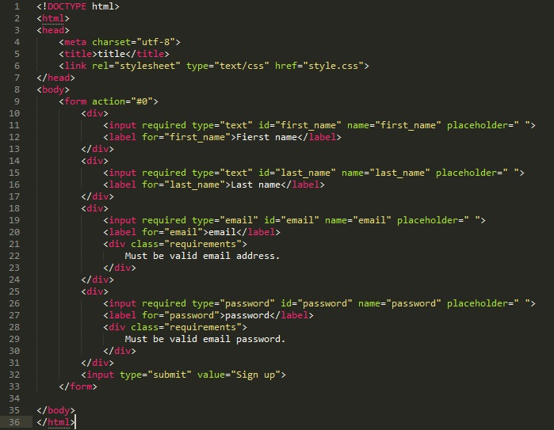
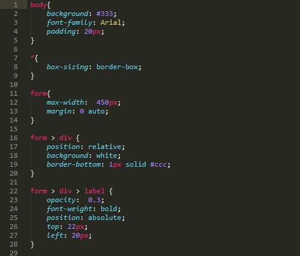
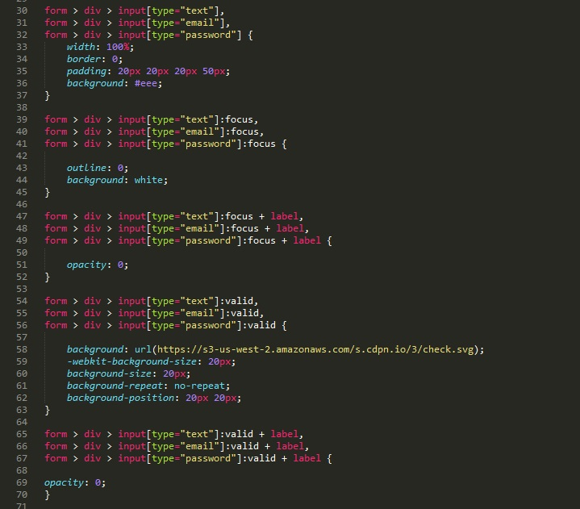
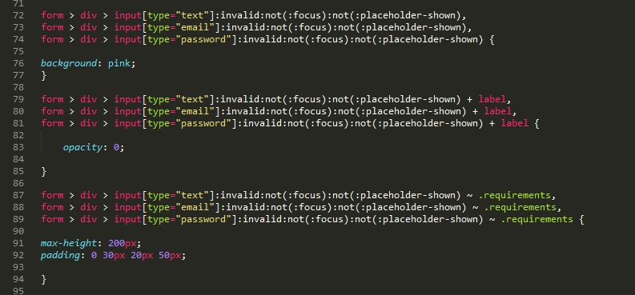
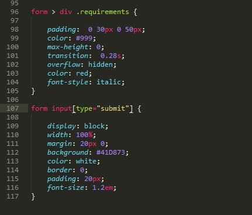

Пример кода html

Рассмотрим основные моменты кода html:
СТР 9 - у формы мы используем атрибут action который должен указывать где будет обрабатываться код. Указываем #0 - т.е. нигде
СТР 10 - 13 - создаем блок div в который помещаем два объета (input и label). рассмотрим следующие атрибуты объектов:
- required - этот атрибут делает поле ввода обязательным
- placeholder - выводит текст внутри текстового поля, который исчезает при получении фокуса
- id, type, name - атрибуты для обращению к объекту в css
Аналогичные атрибуты у остальных полей ввода, за исключение того, что в полях ввода email и password мы будем указывать всплывающие окна в случиях не правильного ввода информации пользователей. В качестве сообщения будет блок div (стр 21-23 и 28-30) Отметим что этим блокам мы присвоили атрибут class со значением requirements
Теперь рассмотрим какие стили мы использовали.

Первое к чему мы обралили - это к телу нашей страницы. СТР 1-5.
- background: #333; - установили темный цвет фона страницы
- font-family: Arial; - установили шрифт Arial
- padding: 20px; - установили отступы с внутренней стороны 20 пикселей
В следующем разделе мы указали что абсолютно для всех объектов установили box-sizing: border-box; (СТР 7-9). Что за атрибут такой box-sizing? box-sizing - Применяется для изменения алгоритма расчета ширины и высоты элемента.
Согласно спецификации CSS ширина блока складывается из ширины контента (width), значений отступов (margin), полей (padding) и границ (border). Аналогично обстоит и с высотой блока. Свойство box-sizing позволяет изменить этот алгоритм, чтобы свойства width и height задавали размеры не контента, а размеры блока.
Далее мы устанавливаем стили для нашей формы СТР 11-14
- max-width: 450px; - установили максимальную ширину 450 пикселей
- margin: 0 auto; - устанавливили величину отступа от каждого края элемента - 0 и указали что браузер сам должен расчитать это значение при изменении размеров окна
Далее мы указываем стили для всех div которые находятся на форме. СТР 16-20
- position: relative; - Устанавливает способ позиционирования элемента относительно окна браузера или других объектов на веб-странице. relative - Положение элемента устанавливается относительно его исходного места.
- background: white; - установили цвет фона - белый
- border-bottom: 1px solid #ccc; - установили цвет и тип нижней границы блока
Далее указываем стили для label внутри div который внутри form СТР 22-28
- opacity: 0.3; - Определяет уровень прозрачности элемента веб-страницы - 0.3
- font-weight: bold; - жирный текст
- position: absolute; - абсолютная позиция
- top: 22px; - Для позиционированного элемента определяет расстояние от верхнего края родительского элемента до верхнего края дочернего элемента
- left: 20px; - Для позиционированного элемента определяет расстояние от левого края родительского элемента, не включая отступ, поле и ширину рамки, до левого края дочернего элемента.
Рассмотрим следующую часть кода CSS

Теперь стили мы будем применять к группе объетов input. Объдиняться эти объекты в CSS будут с помощью атрибута type. атрибуты указываются через запятую. в фигурных скобках мы указываем стили которые будут применяться ко всем объектам.
Рассмотрим следующий блок СТР 30-37:
- width: 100%; - ширина input 100% родительского элемента
- border: 0; - рамка 0 пикселей
- padding: 20px 20px 20px 50px; - отступы с внутренней стороны
- background: #eee; - цвет фона input
Далее мы применяем стили к этим же объектам но теперь используем псевдокласс focus. Псевдокласс :focus определяет стиль для элемента получающего фокус СТР 39-45.
- outline: 0; - устанавливает цвет, стиль и толщину внешней границы на всех четырех сторонах элемента.
- background: white; - цвет фона белый
Далее устанавливаем стили для label при фокусе на input. Иными словами, у нас есть input к которым привязаны lable, вот к этим label и будут применяться стили при фокусе на их родительские input СТР 47-52
- opacity: 0; - устанавливаем 0-ую прозрачнойть, т.е. при наведении фокуса на input label будет невидимым
Далее к тем же трем объектам мы будем применять псевдокласс valid. Этот псевдокласс применяется к полям формы, содержимое которых проходит проверку в браузере на соответствие указанному типу. Так как мы в объектах input указали атрибут required и тип, то браузер сам будет проверять на правильность введенных в поля данных. И значит при правильном введении данных будут применяться стили которые указаны в фигурных скобках. Еще раз, псевдокласс valid применяет стили к полям которые проверку прошли СТР 54-63.
- background: url(https://s3-us-west-2.amazonaws.com/s.cdpn.io/3/check.svg); - на фон будет выставляться картинка которая доступна по адресу
- -webkit-background-size: 20px; - позволяет указывать размеры фонового изображения, которые могут быть заданы в абсолютных величинах (cm, mm, in и т.д.), относительных (px, em и т.д.), или в процентах, по отношению к ширине и высоте элемента контейнера.
- background-size: 20px; - Масштабирует фоновое изображение согласно заданным размерам.
- background-repeat: no-repeat; - не замощать фон картинкой
- background-position: 20px 20px; - устанавливаем позицию картинки по осям X и Y
Далее мы устанавливаем стили для label при проверки валидности наших input. т.е если валидность пройдена положительно то к label применяются стили СТР 65-70
- opacity: 0; - прозрачность 0
Теперь рассмотрим часть кода где мы используем псевдоклссы которые будут применять стили при отрицательном результате проверки валидности

Для начала разберем строку указания псевдоклассов invalid:not(:focus):not(:placeholder-shown)
- invalid. - применяется к полям формы, содержимое которых не соответствует указанному типу
- not(:focus) - дословно на которых нет фокуса
- not(:placeholder-shown) - placeholder-shown - определяет стиль элемента input, который в данный момент отображает текст подсказки, заданной атрибутом placeholder. т.е. этот элемент можно прочитать как будут применяться стили если input не отображает подсказки заданные атрибутом placeholder
При выполнении всех этих условий будет применяться стили: СТР 72-76
- background: pink; - фон input окрасится в розовый
Далее все теже условия что и в предыдущем блоке, только стили будут применяться к объекту label СТР 79-85
- opacity: 0; - прозрачность 0. т.е. при не прохождении валидации, при отсутствии фокуса и при не отображении подсказки прозрачность label будет нулевой.
Следующая часть кода применяет стили к блокам с классом requirements при тех же условиях что и в предыдущих блоках
- max-height: 200px; - максимальная высота 200 пикселей
- padding: 0 30px 20px 50px; - отступ по внутренней стороне в пикселях
И наконец последний кусок кода

В первой части указываем? что объектам? которые находятся в div? которые в свою очередь находятся в form, присваиваем стили. Т.е. стили будут присваиваться к div с классом requirements, блоки в которых содержатся сообщения об невалидности введенного текста СТР 96-105
- padding: 0 30px 0 50px; - отступы с внутренней стороны
- color: #999; - цвет текста
- max-height: 0; - максиммальная высота - 0
- transition: 0.28s; - Задаёт промежуток времени, в течение которого должен осуществляться переход
- overflow: hidden; - управляет отображением содержания блочного элемента. hidden- скрыт
- color: red; - цвет текста
- font-style: italic; - шрифт - italic
И последний блок. Здесь указываются стили объекта input с типом submit - нашей кнопки СТР 107-117
- display: block; - поля становятся блоками
- width: 100%; - ширина 100%
- margin: 20px 0; - отступы с внешней стороны
- background: #41D873; - цвет фона
- color: white; - цвет текста
- border: 0; - рамка
- padding: 20px; - отступ с внутренней стороны
- font-size: 1.2em; - размер текста